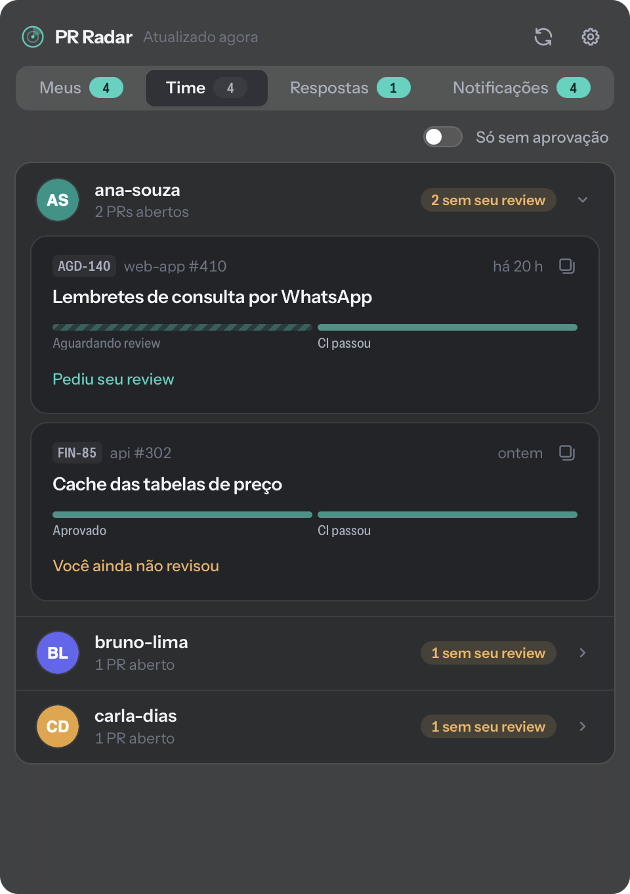
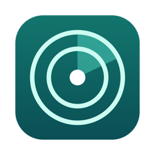
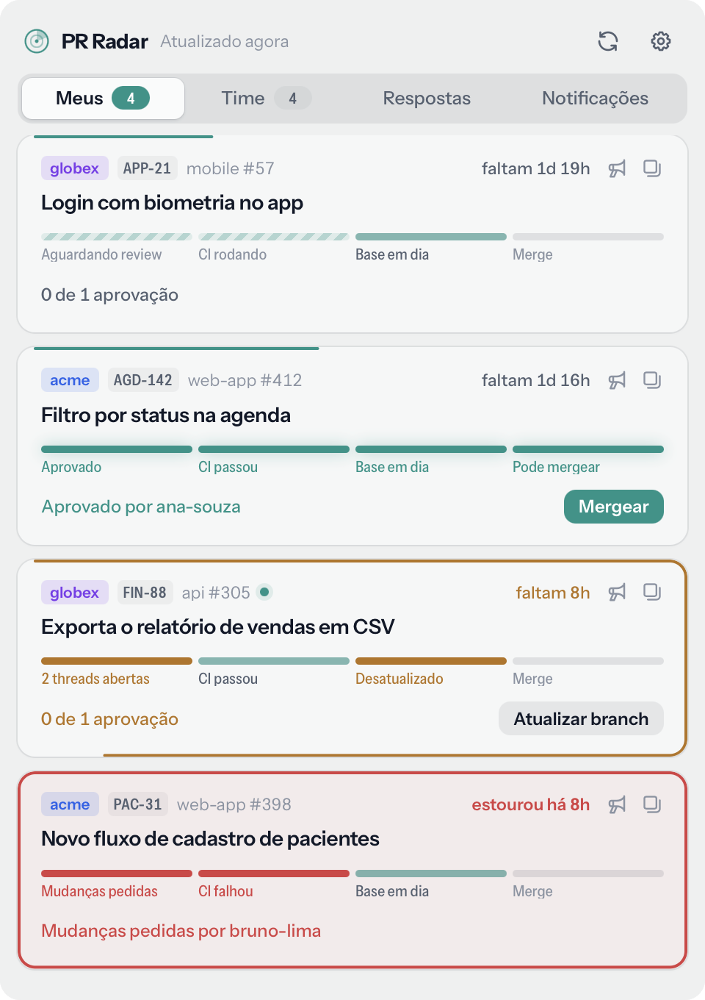
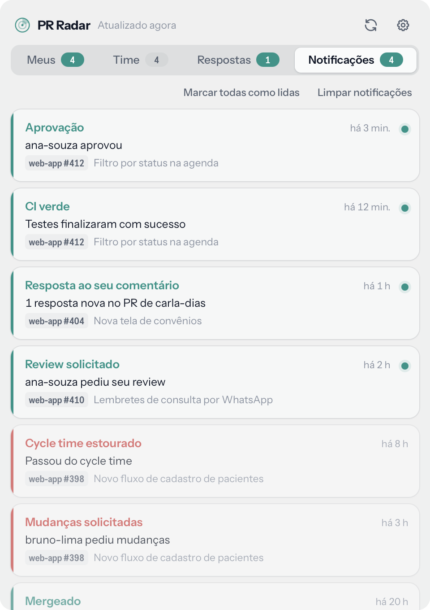
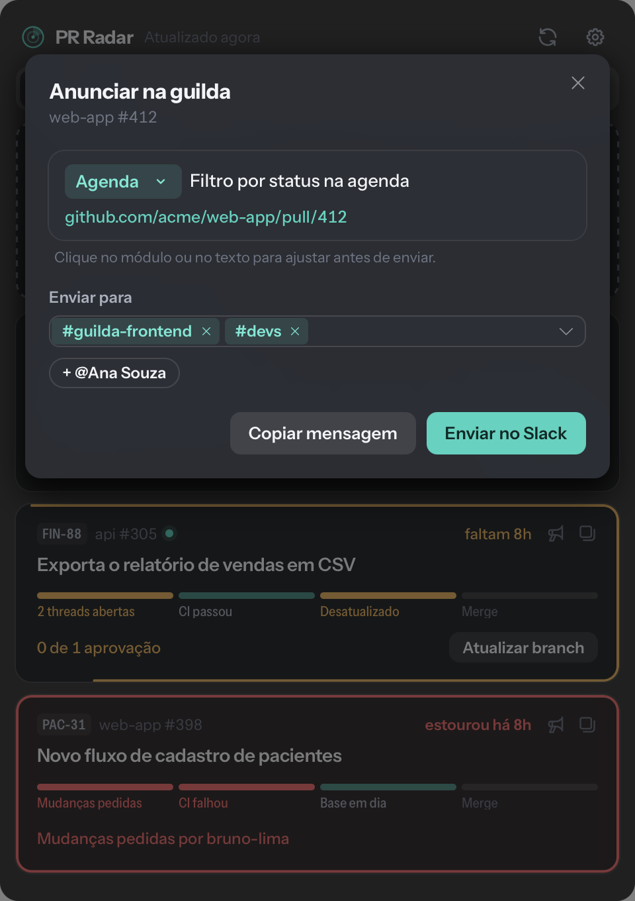
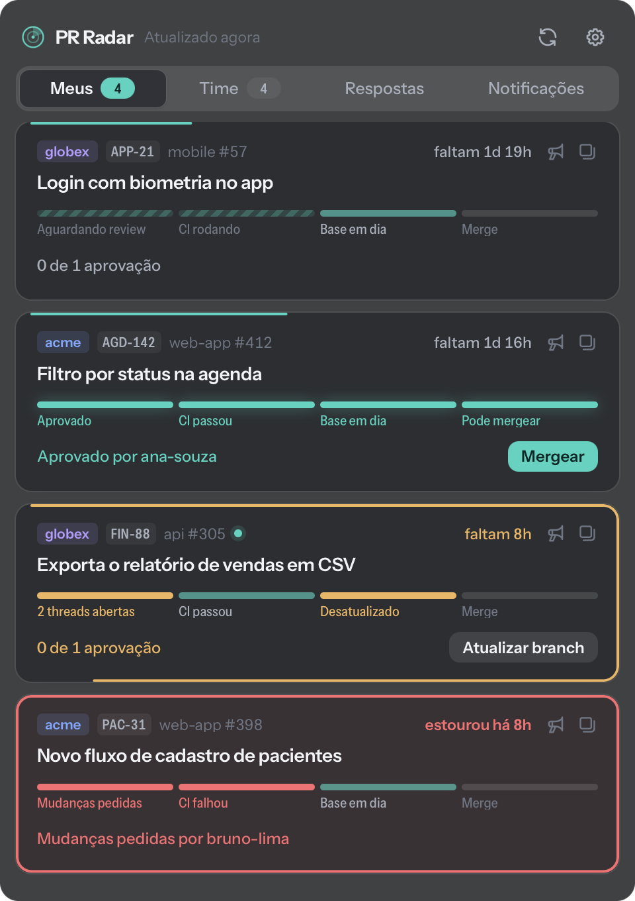

O time inteiro, separado por pessoa
Escolha quem acompanhar e veja os PRs de cada um, com destaque para os que ainda não têm o seu review. Um filtro mostra só o que está sem aprovação.


PR RadarUm app na barra do Mac que acompanha seus pull requests e os do seu time. Review, CI, conflito e cycle time num olhar, com aviso quando alguém aprova, comenta ou responde você.
macOS 12 ou mais novo, Intel e Apple Silicon. Assinado e notarizado pela Apple.

Cada card mostra onde o PR está e o que falta, sem precisar abrir a página dele. Quando tudo fica verde, o botão de merge aparece ali mesmo.
Escolha quem acompanhar e veja os PRs de cada um, com destaque para os que ainda não têm o seu review. Um filtro mostra só o que está sem aprovação.

Aprovação, CI verde ou falhando, comentário novo, conflito, resposta a um comentário seu e cycle time estourado viram notificações do Mac e ficam guardados numa lista.

O PR Radar monta a mensagem com o módulo e a descrição, avisa se ainda há threads sem resolver e envia pelo Slack em seu nome, para os canais que você escolher.

O painel usa o vidro translúcido do próprio macOS e acompanha o tema do sistema, ou o que você escolher nas configurações. As atualizações chegam sozinhas, com um clique para instalar.

O PR Radar usa o login do GitHub CLI que você já tem. Ele não pede senha nem token.
No Terminal: brew install gh e depois gh auth login.
Abra o DMG, arraste o PR Radar para Aplicativos e abra por lá. Fora de Aplicativos ele não consegue se atualizar.
Na engrenagem, escolha as organizações, as pessoas que quer acompanhar e o seu cycle time. Se quiser, conecte o Slack.